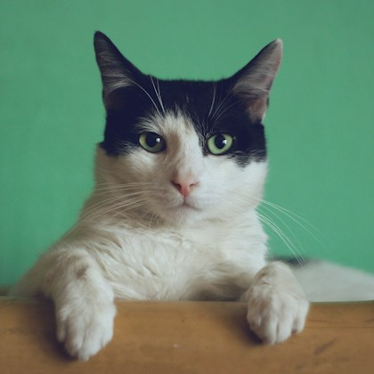
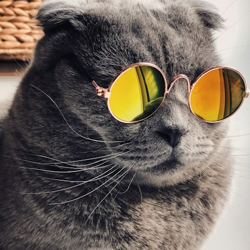

MIAU CHEF · CORRERIA NO FOGÃO
Bigodes a postos. O pedido não espera!
Monte pratos brasileiros com a equipe mais peluda do bairro. Acerte os ingredientes, sirva rapidinho e tente não deixar cair a farofa.



🎟️ Comanda--
PEDIDO DA VEZ
Aguardando o primeiro pedido
Abra a cozinha e descubra o que saiu do forno.
- ???
- ???
- ???
🐾 Chef de plantão100% bigodes
“Hoje eu só derrubei uma panela. Até agora.”
Luna · chefe dos miados
🧺 Bancada de ingredientesclique na ordem
Clique em “Abrir a cozinha” para começar o turno de 60 segundos.
Como jogar: clique nos ingredientes da comanda na ordem indicada e sirva o prato. Ingrediente errado custa 2 segundos. Cada trio de comandas traz os três pratos do cardápio!
Fotografias dos gatinhos: Unsplash.